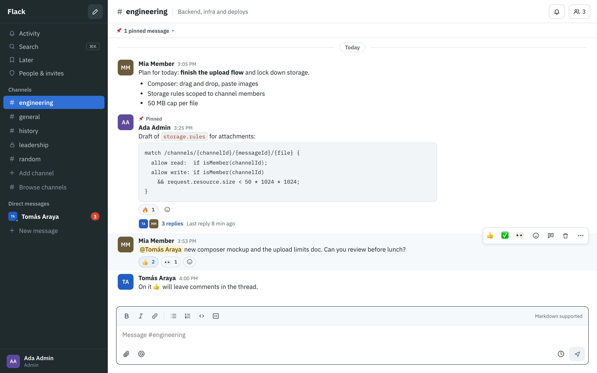
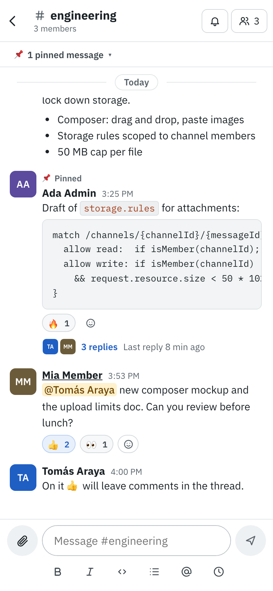
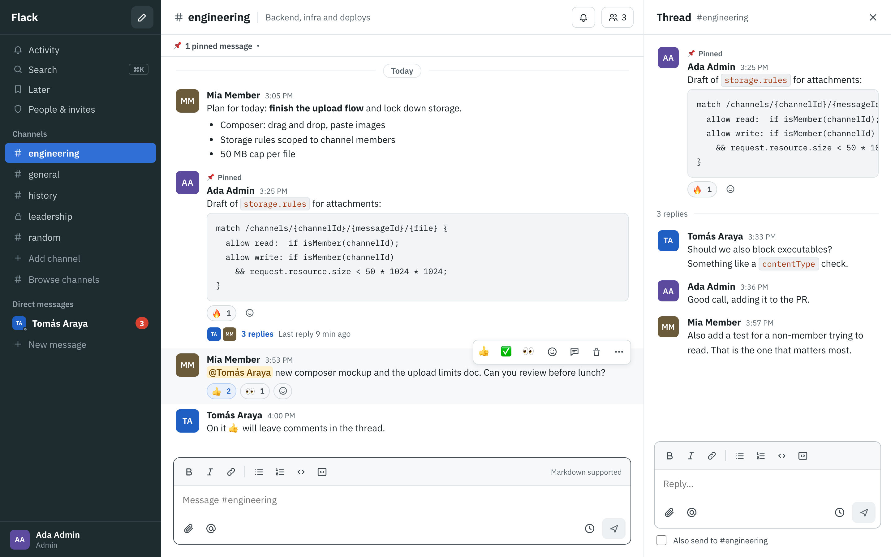

Channels & DMs
Public and private channels, 1:1 and group DMs, unread badges, @mentions, @here and @channel.
Channels, threads, DMs, search, reminders and push notifications, deployed to your Google Cloud project with one command. Pay-as-you-go, and a small team usually pays $0.
Free & open source · Built for teams of 10–100 people, or more · Invite-only


Everything a team actually uses
Public and private channels, 1:1 and group DMs, unread badges, @mentions, @here and @channel.
Reply in threads, “also send to channel”, and see who's typing, even inside a thread.
One shortcut for channels, people and messages. Filter by person, channel, date or files.
/remind me in 1h to…, /schedule tomorrow 9am…, snooze, and a Later inbox.
Desktop, Android and iPhone home-screen app. Per-channel levels and Do Not Disturb schedules.
Your own quick reactions, pinned messages per channel, mark unread and save for later.
Online, away when idle, last seen, custom status with expiry, local time on every profile.
Drag, drop or paste files up to 50 MB. Links unfurl with title, description and image.
Post from CI, scripts and bots, read channels and search with personal tokens. API docs

Install
Click Install in Cloud Shell (nothing to install, you're already signed in), or clone it:
git clone https://github.com/mvergarair/flack
cd flackIt asks for a project id, region, your email and a budget, then sets up and deploys everything.
npm run setupEnable Google sign-in in the Firebase console (the installer prints the link), sign in, and invite your team from Admin.
The installer creates the project (or uses yours), links billing, turns on Firestore, Realtime Database, Storage, Functions and Identity Platform, writes the config, sets a budget alert and deploys. Safe to re-run.
Cost
Flack needs Firebase's Blaze plan: no monthly fee, you pay only for usage beyond the free quotas, which reset every day or month. Flack is built to stay inside them: 50-message pages, an offline cache, presence and typing in the Realtime Database, and search that scales to zero.
The installer sets a budget alert (US$5/month by default) that emails you at 50%, 90% and 100%. The one line item you'll usually see is a few cents a month for storing function images.
Estimates; usage varies with how chatty your team is. Beyond the free quotas you pay a few cents per 100k database operations and about $0.02–0.03 per GB of files per month.
Security
Everything lives in your Google Cloud project. There's no Flack server and no third party.
Firestore, Storage and Realtime Database rules check the invite, the role and channel membership on every request, with 100+ automated tests.
Files download through the SDK with the rules applied. Nothing has a guessable public URL.
Blocking functions refuse any Google account that wasn't invited, and deactivated people are locked out immediately.
You need a Google Cloud billing account (Blaze plan) because Flack uses Cloud Functions. With the free quotas and the budget alert, small teams typically pay nothing.
It's built for teams of 10–100 people, and larger teams work too. Past a few hundred people, the repo's backlog describes how to trim the always-on listeners (presence and the member directory) to keep costs flat.
Yes. Add a custom domain in Firebase Hosting and add it to the authorized domains for sign-in.
It's an installable PWA: add it to the home screen on iPhone or install it on Android for push notifications and a full-screen app.
Run npm run update in your Flack folder. It pulls the latest version, turns on anything new it needs and deploys, keeping your settings. Admins see a note in the app when a new release is out.